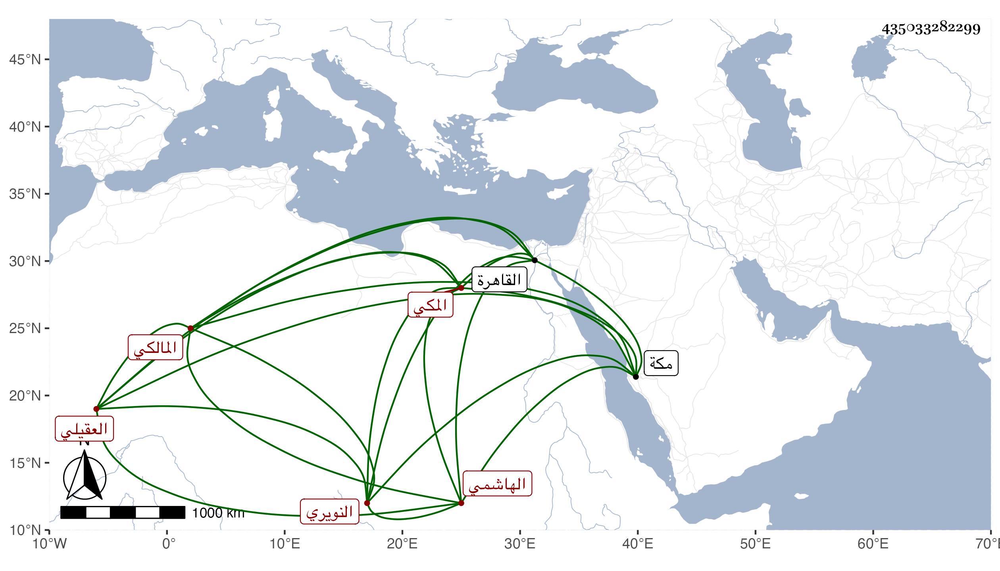

0902Sakhawi.DawLamic.ITO20230111-ara1.EIS1600.435033282299
Biography ID: 435033282299
361
محمد بن محمد بن علي بن أحمد بن عبد العزيز بن القسم الجمال أبو المحامد ابن الولوي أبي عبد الله الهاشمي العقيلي النويري المكي المالكي ابن عم الذي قبله ووالد أبي عبد الله محمد الآتي ، وأمه عائشة ابنة علي بن عبد العزيز بن عبد الكافي الدقوقي . ولد بمكة ونشأ بها ، وسمع من النجم المرجاني والتقى الفاسي والجمال المرشدي وابن الجزري وغيرهم ، وأجاز له عائشة ابنة ابن عبد الهادي وعبد القادر الأرموي وابن طولوبغا وخلق ، ودخل القاهرة غير مرة وحضر بها مجلس الزين عبادة وناب في القضاء والإمامة بمقام المالكية عن أبيه ثم استقل بنصف الإمامة ثم عزل عنها ثم أعيد حتى مات في صبيحة يوم الجمعة ثالث عشرى ربيع الأول سنة ثلاث وخمسين واستقر فيما كان معه من الإمامة ولده رحمه الله .
